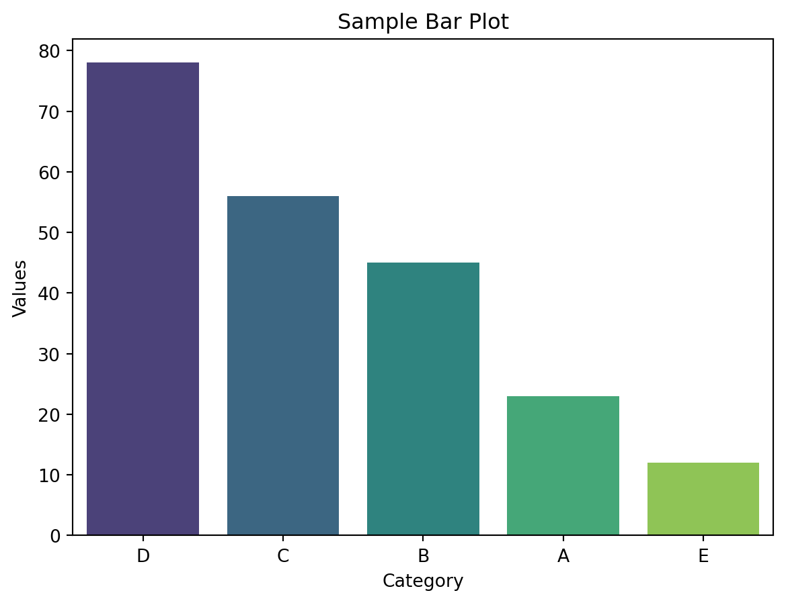

print(help(len))
# output:Help on built-in function len in module builtins:
len(obj, /)
Return the number of items in a container.
None
3 Mar 2025
Introduction to VS
Installing and Importing Libraries in Python
Getting Help in Python
Introduction to Quarto
A collection of pre-written code that contains functions and modules that developers can use to solve programming tasks
Python libraries cover libraries for a wide range of tasks, including:
pandas and numpy for data analysis, cleaning, exploration, and efficient numerical computations.scikit-learn, TensorFlow for machine learning tasks such as prediction, clustering, and forecasting.statsforecast, darts and skforecast for forecasting taskspip install <library-name>.pip install numpypython !pip install numpyOnce a library is installed, you need to import it into your Python script:
Example:
import numpyUse as to create an alias for convenience (e.g., import pandas as pd or import numpy as np).
Use from … import … to call specific functions from libraries or modules :
Example:
from math import sqrt
print(sqrt(16)) # Output: 4.0print(), id() are always present, these are built-in namespaces.x = "global"
def outer_function():
# Enclosing namespace
x = "enclosing"
def inner_function():
# Local namespace
x = "local"
print("Inner:", x) # Prints: Inner: local
inner_function()
print("Outer:", x) # Prints: Outer: enclosing
outer_function()
print("Global:", x) # Prints: Global: globalhelp(): Displays documentation for an object.dir(): Lists the attributes and methods of an objecttype(): Displays the type of the objectExample -1:
print(help(len))
# output:Help on built-in function len in module builtins:
len(obj, /)
Return the number of items in a container.
NoneExample -2:
print(dir(list))
# output:['__add__', '__class__', '__class_getitem__', '__contains__', '__delattr__', '__delitem__', '__dir__', '__doc__', '__eq__', '__format__', '__ge__', '__getattribute__', '__getitem__', '__getstate__', '__gt__', '__hash__', '__iadd__', '__imul__', '__init__', '__init_subclass__', '__iter__', '__le__', '__len__', '__lt__', '__mul__', '__ne__', '__new__', '__reduce__', '__reduce_ex__', '__repr__', '__reversed__', '__rmul__', '__setattr__', '__setitem__', '__sizeof__', '__str__', '__subclasshook__', 'append', 'clear', 'copy', 'count', 'extend', 'index', 'insert', 'pop', 'remove', 'reverse', 'sort']Example -3:
x = "cardiff"
y = 5
z = [1,2,3,4,5]
print(type(x))
print(type(y))
print(type(z))
# output:<class 'str'>
<class 'int'>
<class 'list'>Quarto help us publish reproducible, production quality articles, presentations, dashboards, websites, blogs, and books in HTML, PDF, MS Word, ePub, and more.
Here’s an example of creating a bar plot using Seaborn package with a sample dataset:
# Import required libraries
import seaborn as sns
import matplotlib.pyplot as plt
# Sample data
data = {
"Category": ["A", "B", "C", "D", "E"],
"Values": [23, 45, 56, 78, 12]
}
# Convert to a DataFrame
import pandas as pd
df = pd.DataFrame(data).sort_values(by = "Values", ascending=False)
# Create a bar plot
sns.barplot(x="Category", y="Values", data=df, palette="viridis")
# Add a title and labels
plt.title("Sample Bar Plot")
plt.xlabel("Category")
plt.ylabel("Values")
# Show the plot
plt.show()# Import required libraries
import pandas as pd
import numpy as np
import seaborn as sns
import matplotlib.pyplot as plt
# Sample data
data = {
"Category": ["A", "B", "C", "D", "E"],
"Values": [23, 45, 56, 78, 12]
}
# Convert to a DataFrame
import pandas as pd
df = pd.DataFrame(data).sort_values(by = "Values", ascending=False)
# Create a bar plot
sns.barplot(x="Category", y="Values", data=df, palette="viridis")
# Add a title and labels
plt.title("Sample Bar Plot")
plt.xlabel("Category")
plt.ylabel("Values")
# Show the plot
plt.show()/var/folders/7w/zxxq8plj5k90hgw6xj0_0j280000gn/T/ipykernel_35656/4240843887.py:18: FutureWarning:
Passing `palette` without assigning `hue` is deprecated and will be removed in v0.14.0. Assign the `x` variable to `hue` and set `legend=False` for the same effect.

An example of creating a line graph using plotly package
import plotly.express as px
df = px.data.gapminder().query("country=='Canada'")
fig = px.line(df, x="year", y="lifeExp", title='Life expectancy in Canada')
fig.show()